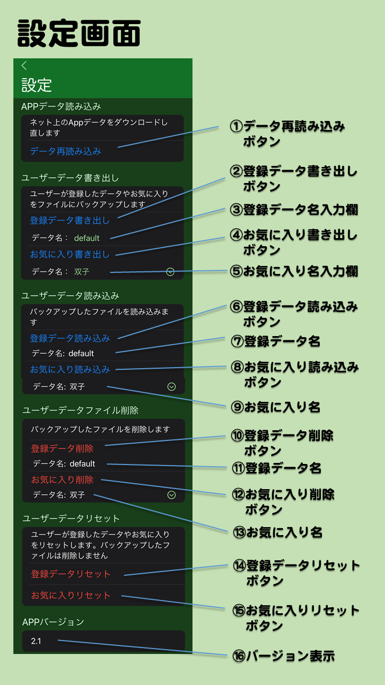

- 設定画面とは
- メイン画面などで画面下の歯車アイコンをタップして移動してくる画面です。データの保存や読み込みやリセットなどができます。
- 画面の説明
- ①データ再読み込みボタン
- Appデータをネットから再読み込みします。画像やデータが正しく読み込みできてないように見える時に押してください。
- ②登録データ書き出しボタン
- ユーザーが新規登録画面や編集画面で登録・編集したデータをファイルに書き出します。バックアップのために使えます。
iPhoneにプリインストールされているファイルAppでパンダ誕生日Appのフォルダを開き、他のiPadやiPhoneのパンダ誕生日App にコピーして読み込みさせることもできます。
- ③登録データ名入力欄
- 登録データ書き出しボタンを押す前に、ここをタップすると書き出すファイル名を変更できます。初期値は default です。複数の名前が違うファイルに書き出した場合は右側に下矢印ボタンが表示され、過去に書き出したファイルを選ぶこともできます。ファイルAppで参照できるファイル名の初期値は pandaBirthdayUserData_default.txt で、名前を変えて保存したら default の部分が違うファイル名として保存されます。
- ④お気に入り書き出しボタン
- ユーザーが詳細情報画面でセットしたお気に入りの情報をファイルに書き出します。バックアップのために使えます。
このファイルも登録データと同じようにiPhoneのファイルAppでコピーできます。
- ⑤お気に入り名入力欄
- お気に入り書き出しボタンを押す前に、ここをタップすると書き出すファイル名を変更できます。初期値は default です。複数の名前が違うファイルに書き出した場合は右側に下矢印ボタンが表示され、過去に書き出したファイルを選ぶこともできます。ファイル名は初期値は pandaBirthdayFavorites_default.txt で、名前を変えて保存したら default の部分が違うファイル名として保存されます。
- ⑥登録データ読み込みボタン
- ②で書き出したユーザー登録データのファイルを読み込みます。
- ⑦登録データ名
- 登録データ読み込みボタンを押す前に、読み込むファイルの名前を表示します。２個以上のファイルがあった場合は右側に下矢印ボタンが表示され、どのファイルを読み込むか選択できます。
- ⑧お気に入り読み込みボタン
- ④で書き出したお気に入りデータのファイルを読み込みます。
お気に入りデータは④の登録データの読み込みの後に読み込まないと、登録データのお気に入りが反映されないので注意してください。
- ⑨お気に入り名
- お気に入り読み込みボタンを押す前に、読み込むファイルの名前を表示します。２個以上のファイルがあった場合は右側に下矢印ボタンが表示され、どのファイルを読み込むか選択できます。
- ⑩登録データ削除ボタン
- ユーザー登録データのファイルを削除します。
- 11.登録データ名
- 登録データ削除ボタンを押す前に、削除するファイルの名前を表示します。２個以上のファイルがあった場合は右側に下矢印ボタンが表示され、どのファイルを削除するか選択できます。
- 12.お気に入り削除ボタン
- お気に入りデータのファイルを削除します。
- 13.お気に入り名
- お気に入り削除ボタンを押す前に、削除するファイルの名前を表示します。２個以上のファイルがあった場合は右側に下矢印ボタンが表示され、どのファイルを削除するか選択できます。
- 14.登録データリセットボタン
- 現在Appに登録されているユーザーデータをリセットします。②で書き出したファイルは消えません。
- 15.お気に入りリセットボタン
- 現在のお気に入りをリセットします。④で書き出したファイルは消えません。
- 16.バージョン表示
- 今使っているAppのバージョン番号を表示します。AppStore にある最新のバージョンと同じか確認できます。